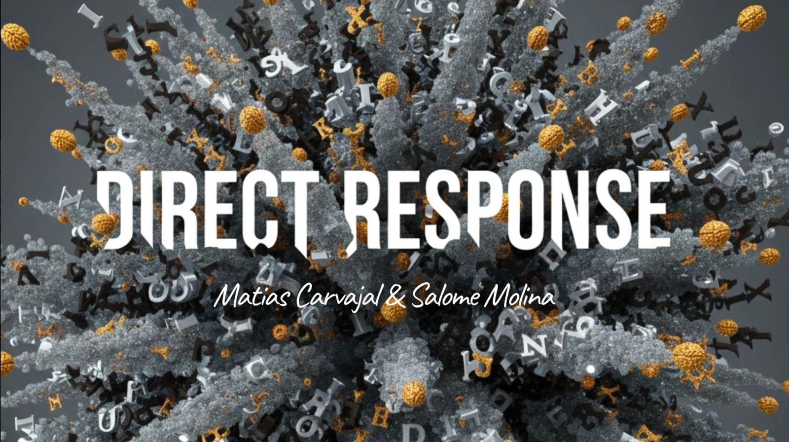
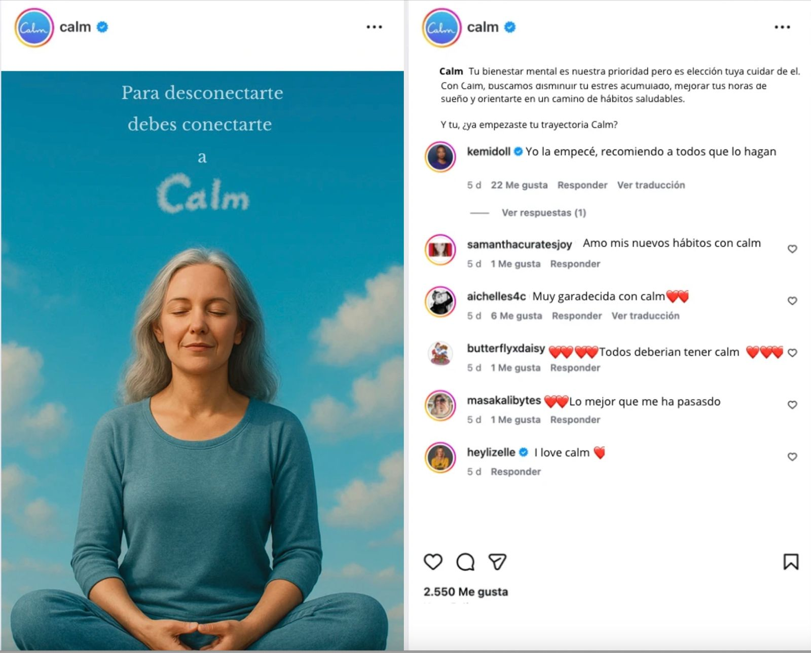
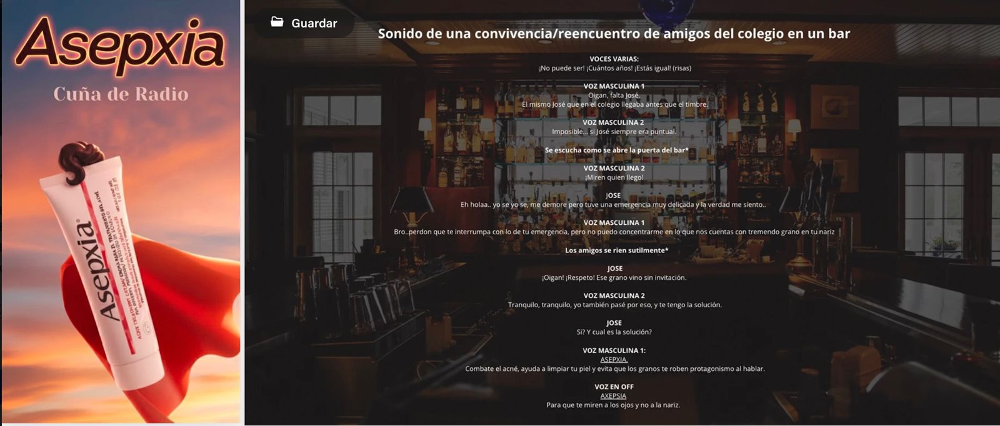
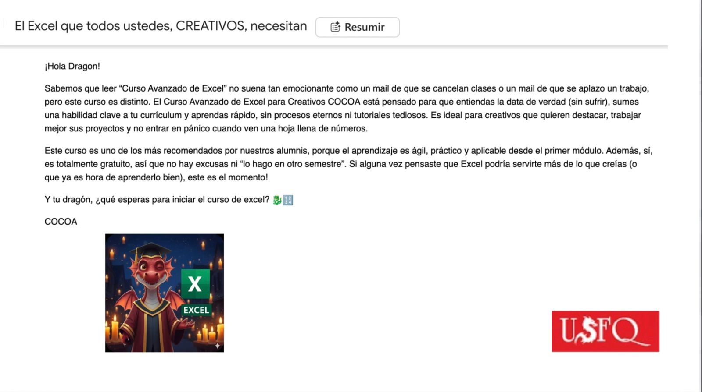
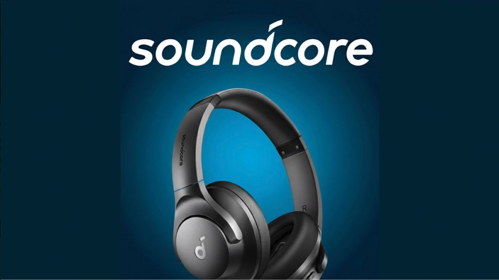
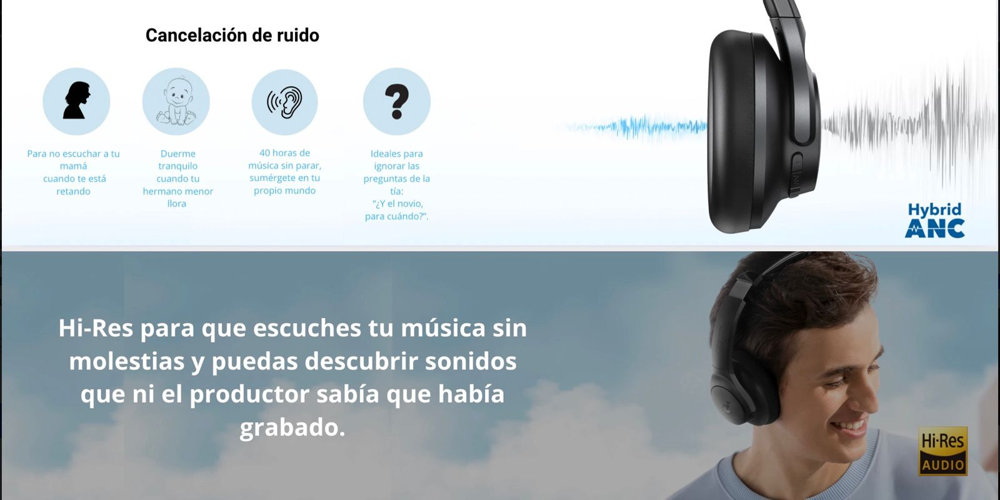
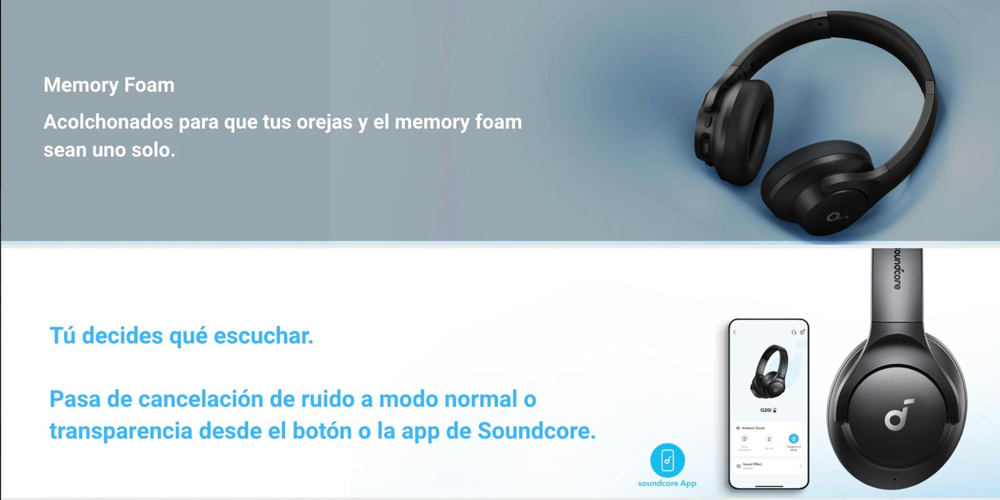

Direct Response es un ejercicio en donde mi dupla y yo nos enfrentamos a una realidad dificil dentro del mundo del Marketing y la Publicidad, "Conectar con el consumidor". Para entender mejor este tema, hicimos una serie de replanteo/propuestas creativas en donde le dimos mas identidad a distintas marcas mediante mailings, META content, scripts, etc.
El mundo de la publicidad es inmenso y entrev tantos creativos y agencias enormes, el factor identificador que marca la diferencia en cada uno de los creativos es su habilidad de poder conectar con cliente, usuarios o consumidores mediante una mezcla entre estrategia, creatividad y comunicacion..